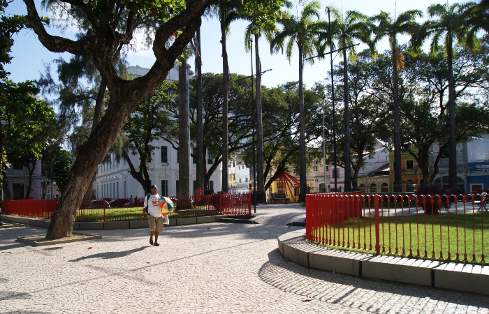
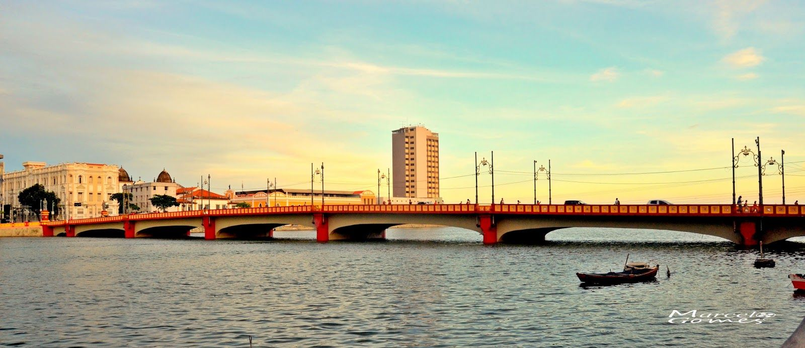

Praça do Arsenal
A Praça do Arsenal é um espaço cultural no Recife Antigo, conhecido por sua arquitetura histórica e eventos culturais frequentes.
Localizada próximo ao Marco Zero, a Praça do Arsenal é um local de encontro para moradores e turistas.
Ponte Maurício de Nassau
A Ponte Maurício de Nassau é uma das principais atrações do Recife Antigo. Ela conecta as margens do Rio Capibaribe, proporcionando uma vista incrível da cidade.
Com iluminação especial à noite, a ponte é um lugar popular para passeios românticos.
Imagens
Praça do Arsenal
Ponte Maurício de Nassau